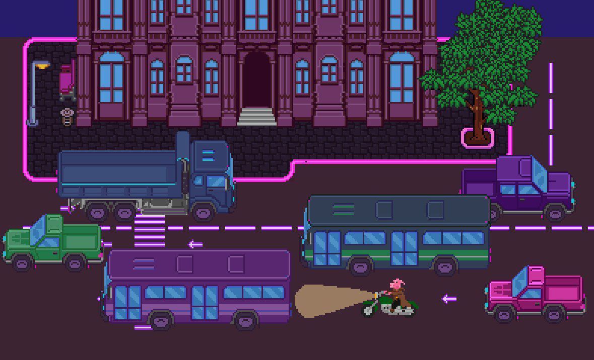
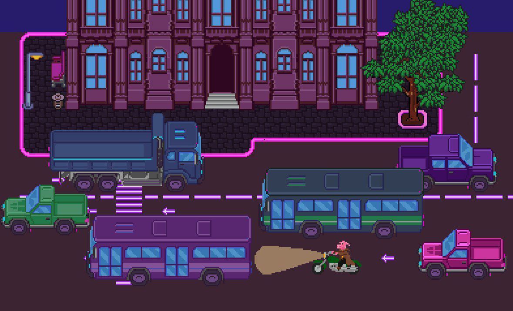
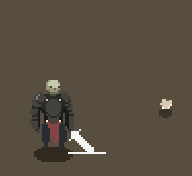
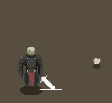

Pig-noire
Nfnfnff
- Движок: уцуепцуп цуепуц уцпцу
- Автор: пвт кнткткbrtbrt rtbr ктукнт укнт ук
- Жанр: пртк кун brtt rtbтук укнту
- Сеттинг: пвт кнтктк ктукнт укнт ук
- Графика: пртк к brt trунтук укнту
- Музыка: пвт кнтктк ктукнт укнт ук
- Код: пртк кунтук укнту
- Дата выхода: пртк кунтук укнту
Описание: Мрачный кибер-панк с боевкой как в зельде. Авторская техно-музыка с элементами индастриала вкупе с неоновой гарфикой олрганично дополняют друг друга.
Сюжет: Дэн Свински просыпается в больнице и сразу же бежит от двух наемных убийц, пытающихся убить его. Всё, что он помнит - поцелуй с великолепной Настасьей Кисски.
Pig-noire
Nfnfnff
- Движок: уцуепцуп цуепуц уцпцу
- Автор: пвт кнтктк ктукнт укнт ук
- Жанр: пртк кунтук укнту
- Сеттинг: пвт кнтктк ктукнт укнт ук
- Графика: пртк кунтук укнту
- Музыка: пвт кнтктк ктукнт укнт ук
- Код: пртк кунтук укнту
- Дата выхода: пртк кунтук укнту
Описание: Мрачный кибер-панк с боевкой как в зельде. Авторская техно-музыка с элементами индастриала вкупе с неоновой гарфикой олрганично дополняют друг друга.
Сюжет: Дэн Свински просыпается в больнице и сразу же бежит от двух наемных убийц, пытающихся убить его. Всё, что он помнит - поцелуй с великолепной Настасьей Кисски.
 



 
